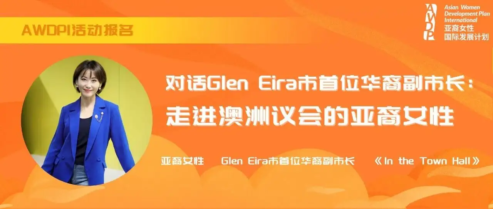
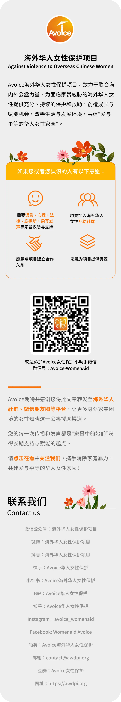

在澳大利亚的地方议会中，一位亚裔女性如何走入公共领导的核心？作为Glen Eira市首位华裔副市长，张俪以坚定和勇气打破了族裔与性别的双重壁垒，为亚裔女性在澳洲公共领域树立了榜样。
本次对话活动，我们诚邀她与大家展开一场深入而真诚的访谈。在访谈中，她将分享作为亚裔女性，自己如何走上公共领导 之路的心路历程，也将回应在澳洲社会中，亚裔女性普遍面临的挑战与她们所拥有的独特价值。同时，她也将结合自身在多元文化项目与组织中的丰富实践经验，讲述如何借助这些平台推动亚裔女性的成长、发声与赋权。
此外，我们还将深入探讨她的著作《In the Town Hall》（《在市政厅里》）中所呈现的内容。这本书既是对澳洲地方治理的观察，也是一部反映多元文化社区声音的纪实作品。大家将有机会听她讲述书中背后的故事与写作初衷。
这不仅是一场访谈，更是一场关于身份、女性领导力与多元文化的对话。我们将透过一位女性领导者的亲身经历，看见一位移民女性如何在主流政治语境中发声、坚持、突破；也将借此契机，共同思考我们如何理解“亚裔女性” 这一身份在海外社会中的位置与潜能。
活动时间
4月30日（星期三）下午1:30–3:30（墨尔本时间）
活动形式
线上视频会议 / 线下对话访谈 + Q&A环节
Annisa Li Zhang 张俪
澳大利亚Glen Eira市议员及前副市长，《在市政厅里》作者，社区志愿者，社会公平权倡导者，墨尔本大学工商管理硕士，南京大学日本语言文学学士，商业咨询顾问，徒步爱好者，澳式橄榄球队队长，自然爱好者，三语者，书虫，母亲，女儿。
线下报名二维码
线上报名二维码
撰稿｜汤欣然
封面、排版｜池一诺


